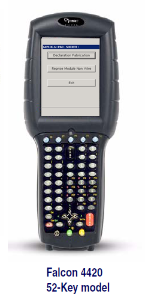
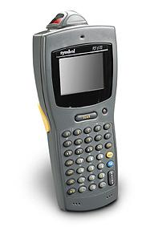
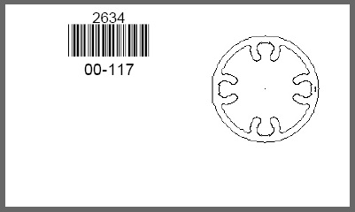
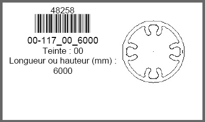
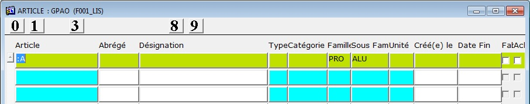
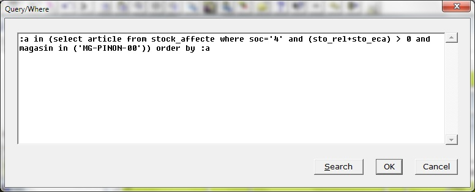
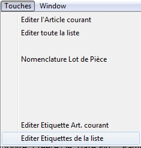
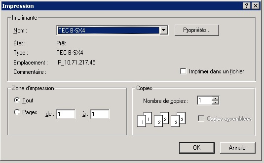
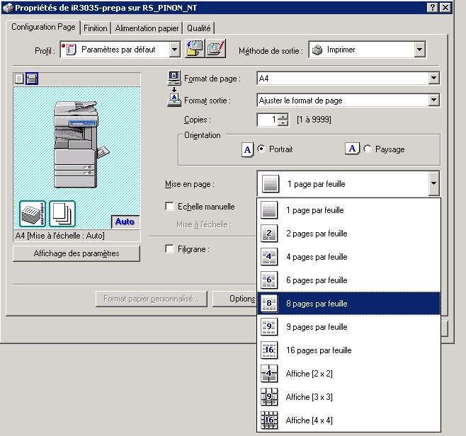
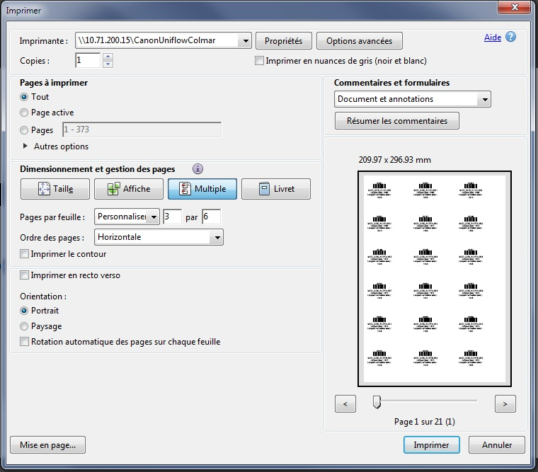

Retour
Accueil usine
Accueil agence
Prise en main
Requêtes (F2)

Sites Internet
|
|
Saisie qté OF Module avec lecteur code barre |
|
 Ce terminal permet :
En complément vous pouvez également consulter la documentation concernant l'expédition de vitrages pour des modules livrés incomplets. |
 Ce terminal permet les saisies
|
| |
Comment imprimer une étiquette code barre :Exemple d'étiquette : ( taille des étiquettes 10 cm * 4 cm )  Depuis la fiche article
Depuis la liste des articles
Depuis les réceptions
| |
Déclaration de fabrication des modules
La déclaration de fabrication des modules Exemple de fiche pour module incomplet
|
Déclaration de fabrication des Ossatures :-----Message d'origine----- De : KUNTZ
Jean-Pierre Bonjour, Pour faire suite à la demande de suivi du sertissage, un nouveau menu de déclaration de fabrication des ossatures a été ajouté aux lecteurs code barre. "Déclaration Fab Ossature" Son utilisation est très simple.
L'ossature entre en stock, la matière prévue dans la nomenclature est consommée dans le magasin MG-PROD. Vincent et moi même restons à disposition pour toute question complémentaire.
ps : un redémarrage du scanner code barre sera peut être nécessaire pour voir ce nouvel écran.
|
Astuce : configurer son poste pour imprimer correctement les documents avec des codes barres.Il faut installer sur votre poste la police de caractères : C39TBNFZ.TTF (clic droit > Enregistrer le fichier sous...) Placer ce fichier dans C:\ Windows > Fonts
Astuce pour imprimer les étiquettes d'une liste d'articles en stock.Aller dans Articles > Liste articles F2 > créer une requête Compléter les colonnes souhaitées (exemple PRO ALU)  lancer la requête Shift+F2 Saisir dans la boite "Query" :a in (select article from stock_affecte where soc='4' and (sto_rel+sto_eca) > 0 and magasin in ('MG-PINON-00')) order by :a  Cliquer sur OK Aller dans le menu Touches > Editer Etiquette...
|
Astuce pour imprimer la liste des articles d'une commande usine ?exemple avec la commande 4598501Aller dans Articles > Liste articles F2 > créer une requête Nommer la colonne Article a: Shift+F2 > lancer la requête Saisir dans la boite "Query" :a in (select article from com_lig where commande='4598501') order by :a ou :a in (select article from com_lig where commande='4598501' and ( article like 'MOD%' or article like 'ECH%' or article like AS%' ) order by :a Cliquer sur OK Aller dans le menu Touches > Editer Etiquette...
|
Imprimer plusieurs étiquettes sur une seule pageAller dans le menu Touches > Editer Etiquette...  Par défaut; les étiquettes sont prévues pour une impression sur l'imprimante dédiée aux étiquettes autocollante.  Si vous souhaitez imprimer la liste sur une feuille A4, ci-dessous deux exemples d'écran de configuration L'imprimante iR3035  Adobe Acrobat 
|